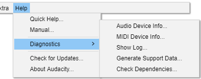

Help Menu: Diagnostics
- Click, or hover, on any menu item in the image to read about that command. Skip the image
- 
Audio Device Info...
Shows technical information about your detected audio device(s), including their supported sample rates. This item is grayed out if you are playing, recording or paused. Press to save the information as a text file, or to return to the main project window.
MIDI Device Info...
Shows technical information about your detected MIDI device(s). This item is grayed out if you are playing, recording or paused. Press to save the information as a text file, or to return to the main project window.
Show Log...
Launches the "Audacity Log" window, which can be kept open while Audacity is used normally. The log is largely a debugging aid, having timestamps for each entry. The Audacity version number is always the first entry at the top. Other log entries are added underneath the version number as needed.
- If you use the optional FFmpeg library, the log shows entries for the steps to load the individual FFmpeg components and whether FFmpeg load succeeded.
- If you export an MP3 audio file, the log shows entries for the steps to load the additional LAME library required for MP3 export, and whether LAME load succeeded.
- If you import an audio file, the log shows the imported file's name and extension, which import libraries attempted to import the file and whether the file import succeeded.
- If Audacity crashes and the Automatic Crash Recovery dialog appears on restarting Audacity, or if Audacity encounters a problem when opening an AUP project file, the log may contain additional useful error details.
Buttons
- : Opens a standard file save dialog where you can save the current contents of the log to a text file.
- Clears the current contents of the log, then inserts the Audacity version number at the top followed by a "Log Cleared." message underneath, both with current timestamps.
- Closes the log, preserving its current content for the remainder of the Audacity session.
| On quitting Audacity the log content is discarded. If you need to save the log contents, do so using the button (or generate a Debug Report as below) before quitting. |
Generate Support Data...
Selecting this will generate a Debug report which could be useful in aiding the developers to identify bugs in Audacity or in third-party plug-ins. A ZIP file will be created for easy emailing but the files included in the ZIP are also saved separately.
By default, all items are selected for inclusion in the report. If you wish to exclude any item, select and uncheck it. You can also view or open the selected item before creating the report. The button opens the selected item in an Audacity window. The button opens the selected item in your default application for that document type.
When you click , Audacity will confirm generation of the report and the exact name and folder location of the Debug report ZIP file. You can copy this name and location to the system clipboard. The folder location will be:
- Windows: C:\Users\<your user name>\AppData\Local\Temp\
- Mac: A subfolder in /var/folders/ - an example subfolder might look something like /var/folders/c0/8p18hd453p3_433cf9_595b40000gn/T/.
- GNU/Linux: /tmp/.
The name of the folder where the separate files are saved specifies the date and time of the report (on Mac and Linux the ZIP's file name also specifies the report's date and time). Below is an example image of the confirmation of generation dialog on Windows:
You can then attach the ZIP file to any bug report or issue that you report. Please submit your report to our feedback address or to the Audacity Forum.
| If the dialog appears of its own accord this will almost certainly be because Audacity has crashed. Audacity will exit after you select OK or Cancel in the dialog and will attempt to recover your project after you restart Audacity. |
Check Dependencies...
Lists any WAV or AIFF audio files that your project depends on, and allows you to copy these files into the project.
Such dependencies are created when you import audio files using the "faster" method whereby the audio files are not actually copied into the project but just referenced in their original location. See this page for more details.